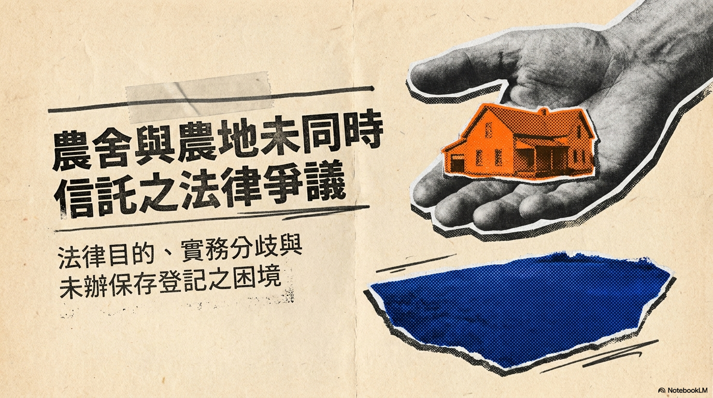
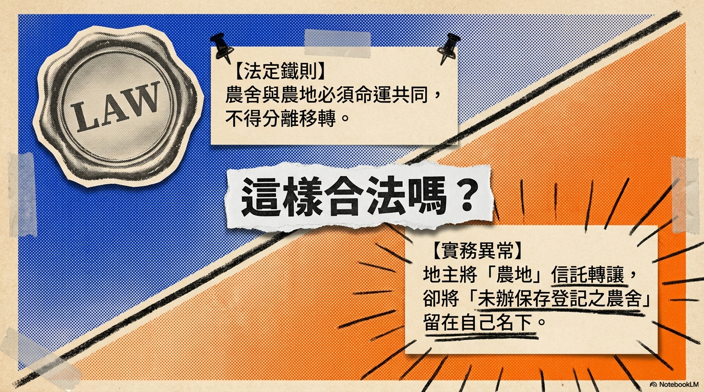
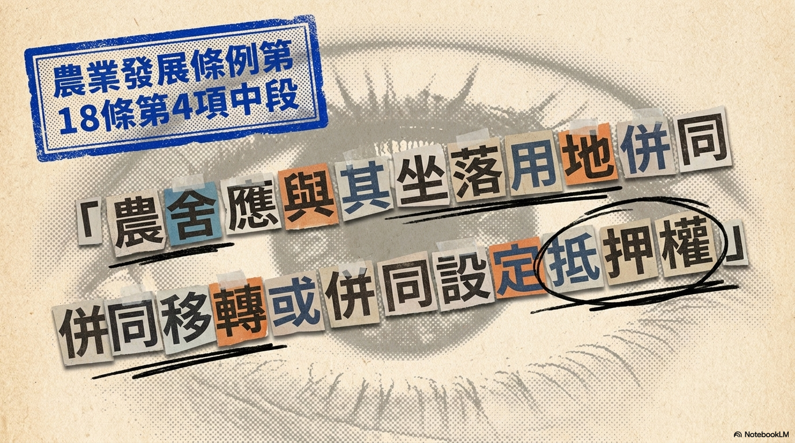
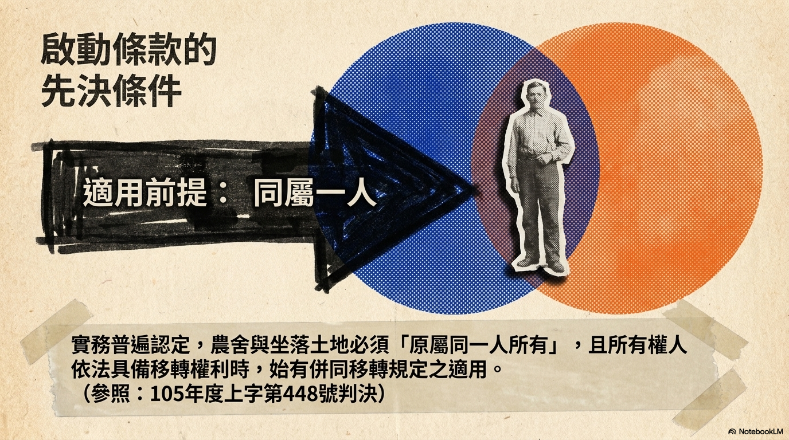
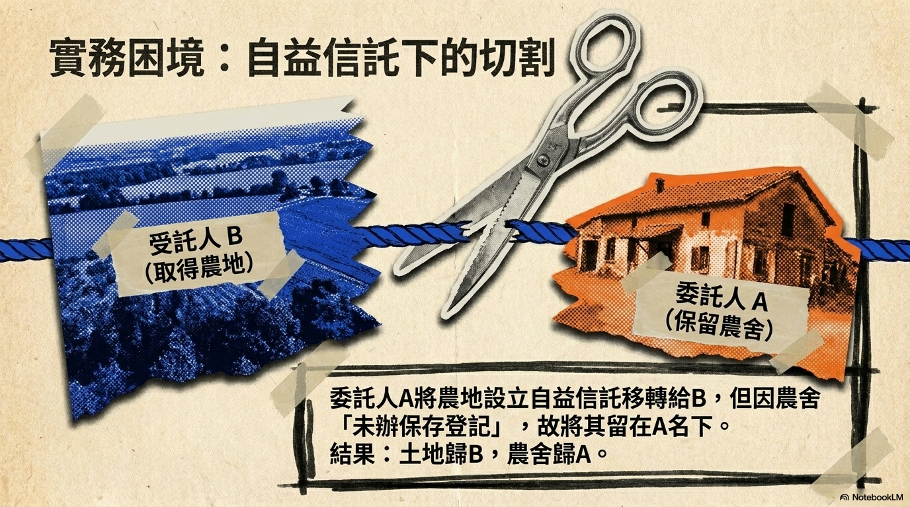
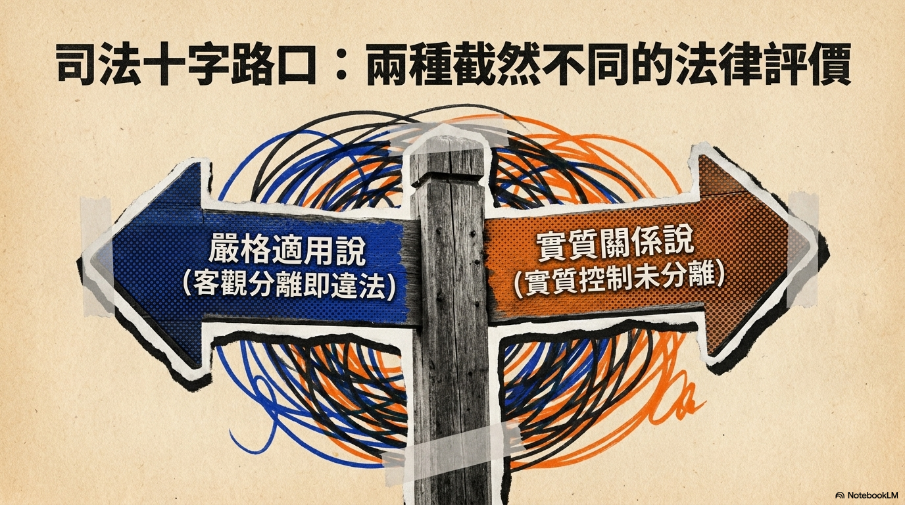
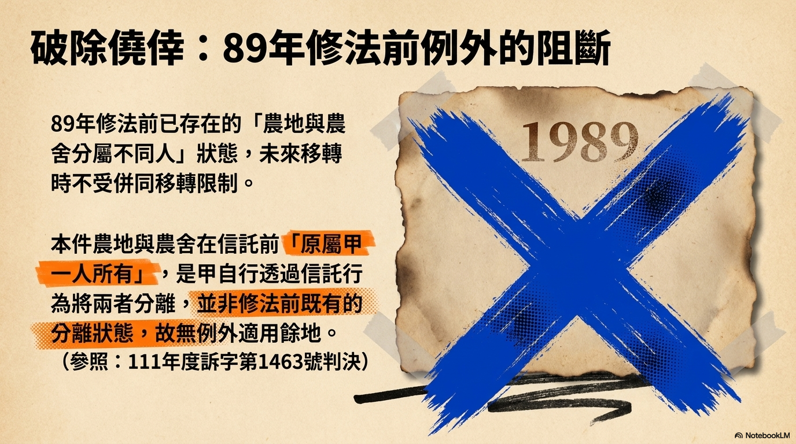
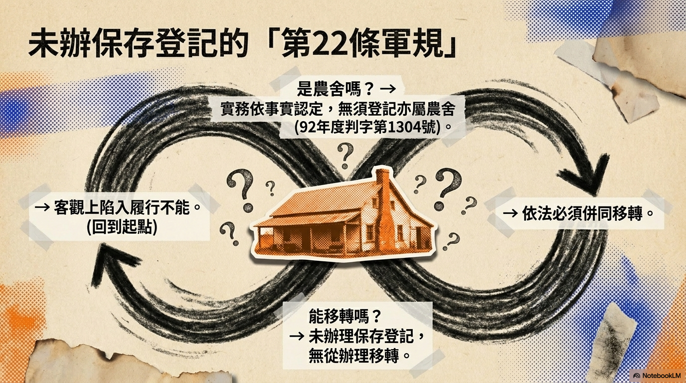
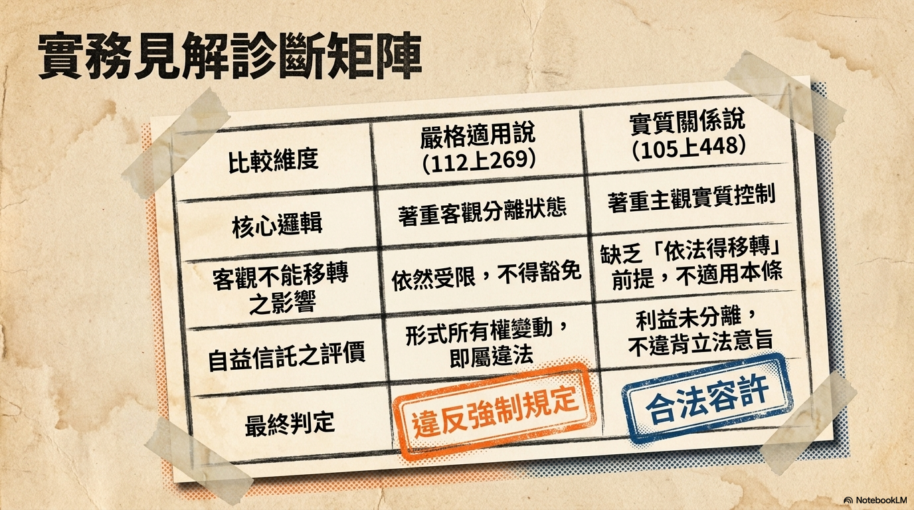
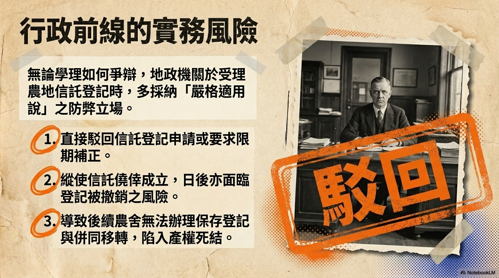

目錄導覽
- 案件事實背景
- 核心爭點
- 規範目的與立法意旨
- 適用前提要件
- 信託移轉性質之認定
- 實務見解分歧總覽
- 嚴格適用說之分析
- 履行不能與實質關係說
- 關鍵判決對照表
- 未辦保存登記農舍之處理
- 信託前後權屬變化
- 法律架構分析圖
- 四因素綜合判斷
- 實務風險評估
- 結論與建議
- 實務建議步驟
- 參考判決總覽
- 判決核實聲明
LEGAL ANALYSIS
農舍與農地
未同時信託之法律問題
農業發展條例第18條第4項 · 自益信託之實務爭議分析
謝秉錡律師事務所 · 2026年6月
01 / 32

02 / 32
簡報目錄
03 / 32
→案件事實背景
→核心爭點
→規範目的與立法意旨
→適用前提要件
→信託移轉性質之認定
→實務見解分歧總覽
→嚴格適用說之分析
→履行不能與實質關係說
→關鍵判決對照表
→未辦保存登記農舍之處理
→信託前後權屬變化
→法律架構分析圖
→四因素綜合判斷
→實務風險評估
→結論與建議
→實務建議步驟
→參考判決總覽
→判決核實聲明
案件事實背景
04 / 32
本案基本事實
1 甲為 A 農地之所有權人，且於該農地上興建有 B 農舍（未辦理保存登記）
2 甲將 A 農地以自益信託方式移轉予乙（受託人），甲同時為信託受益人
3 惟甲未將坐落其上之 B 農舍一併辦理移轉或信託登記
4 信託後：乙取得 A 農地之形式所有權，甲保留 B 農舍之所有權
5
爭議：此舉是否違反農業發展條例第18條第4項中段強制規定？
信託前權屬
甲（委託人）
A 農地
B 農舍（未保存登記）
信託移轉後 ⬇
所有權分離狀態
乙（農地） vs 甲（農舍）
核心爭點
05 / 32
自益信託僅移轉農地而未一併移轉
未辦保存登記農舍之情形
是否違反農業發展條例第18條第4項
「農舍應與其坐落用地併同移轉」之
強制規定？
信託是否該當
「移轉」？
未保存登記農舍
如何處理？
自益信託之
特殊性？

06 / 32

07 / 32
規範目的與立法意旨
08 / 32
農業發展條例第18條第4項中段
「農舍應與其坐落用地併同移轉
或併同設定抵押權」
立法理由
農舍與農業經營有不可分離之關係
規範目的
使農舍與農地歸屬同一人所有，增進利用效率
防止弊端
避免農舍與農地分屬不同所有權人，致使法律關係複雜
實務引用：最高行政法院112年度上字第269號判決
「農舍係為農業經營不可分離之設施物，目的是在於便利農地就地耕種而特予其權限之」
— 92年度判字第1304號判決
09 / 32
適用前提要件
10 / 32
105年度上字第448號判決之見解
1
要件一
農舍與坐落之土地所有權人同屬一人
農業發展條例第18條第4項前段參照
2
要件二
所有權人依法得移轉農舍與坐落之土地
始有可能將農舍與其坐落用地併同移轉
!
本案檢驗
信託前甲同時為A農地與B農舍之所有權人，符合要件一
惟B農舍未辦保存登記，要件二之「依法得移轉」存有爭議

11 / 32
信託移轉性質之認定
12 / 32
信託行為是否該當「移轉」？
實務採肯定見解
「凡農舍所有權之移轉，限定與其坐落之農業用地併同移轉，不論是修正施行前或修正施行後所興建之農舍，均應適用上開本文規範」
— 最高行政法院112年度上字第269號判決
信託移轉之法律效果
形式上發生所有權變動
受託人取得形式所有權
委託人喪失所有權（形式上）
信託以財產管理為目的，仍受本條規範
不論是買賣、贈與或信託，只要發生農舍所有權移轉之效果，即應受農業發展條例第18條第4項規範
13 / 32
實務見解分歧總覽
14 / 32
兩種法律評價立場
嚴格適用說
只要信託行為客觀上造成
農舍與農地所有權分屬不同人
即違反本條規定
不問農舍是否已辦保存登記
不問信託是否為自益信託
代表判決
112年度上字第269號
（最高行政法院）
履行不能說 /
實質關係說
考量客觀履行可能性
及信託之實質法律關係
自益信託未造成實質分離
農舍未辦保存登記→客觀不能移轉
自益信託→實質權益未分離
代表判決
105年度上字第448號

15 / 32
嚴格適用說之分析
16 / 32
客觀上造成所有權分離即屬違反
「查上開第4項中段規定『農舍應與其坐落用地併同移轉』之限制，係因農舍與農業之經營有不可分之關係，為使農舍與農地歸同一人所有…避免因農舍與農地分屬不同人所有」
— 最高行政法院112年度上字第269號判決
適用於本案
信託後 A 農地所有權人為乙，B 農舍所有權人為甲 → 已造成「農舍與農地分屬不同所有權人」之狀態，違反法律目的。
例外不適用：89年修法前已存在之農舍與農地分屬不同人之情形（111年度訴字第1463號判決）。但本案係甲自行透過信託造成分離，不適用此例外。
履行不能與實質關係說
17 / 32
考量客觀履行可能性及信託之實質法律關係
1
客觀履行不能
105年度上字第448號
B農舍未辦保存登記，客觀上無法辦理所有權移轉登記或信託登記，不具備「依法得移轉」之要件，無從適用本條規定
2
自益信託之特殊性
委託人甲同時為受益人，形式上農地所有權移轉予乙，但甲實質上仍享有信託財產受益權，並對B農舍保有所有權，未造成永久分離
3
與立法目的無違
農舍與農地仍歸屬於甲之實質控制下，並未造成法律關係複雜化或利用效率降低之弊端
關鍵判決對照表
18 / 32
| 比較項目 | 嚴格適用說 | 履行不能說/實質關係說 |
|---|---|---|
| 代表判決 | 最高行政法院 112年度上字第269號 | 臺中高分院 105年度上字第448號 |
| 核心主張 | 客觀上造成所有權分離即違反 | 考量客觀履行可能性及實質關係 |
| 對未保存登記農舍之處理 | 仍應適用，要求補正 | 客觀不能移轉，不違反 |
| 對自益信託之評價 | 形式分離即違反 | 實質未分離，較寬鬆 |
| 本案風險 | ⚠ 高風險（登記駁回） | ✓ 較低風險 |
結論：實務上存在明顯分歧，須綜合各因素判斷

19 / 32
未辦保存登記農舍之處理
20 / 32
法律困境與實務難題
農舍之認定
依92年度判字第1304號判決，農舍之認定以事實上存在及農業使用為準，不以辦妥保存登記為必要。故B農舍雖未辦保存登記，仍該當「農舍」定義，應受本條規範。
實務兩難
若嚴格適用本條，要求未辦保存登記農舍必須併同移轉 → 客觀上無法辦理所有權移轉登記
究竟應認為？
A. 客觀不能履行故不違反
B. 應先辦保存登記再併同移轉
建議方案
甲應於B農舍辦妥保存登記後，儘速將該農舍以信託併同登記方式補正，使土地與農舍之登記狀態趨於一致，以符最高法院110年度台上字第311號判決揭示「使農舍所有權與農地利用權結為一體」之立法精神。
信託前後權屬變化
21 / 32
信託前
甲（所有權人）
A 農地
B 農舍
（未保存登記）
✓ 農舍與農地同屬一人
→ 信託移轉 →
信託後
乙（受託人）
甲（受益人）
A 農地
所有權 ↗
B 農舍
所有權 ↙
⚠所有權分離狀態
農舍（甲）≠ 農地（乙）
法律架構分析圖
22 / 32
農業發展條例第18條第4項中段
「農舍應與其坐落用地併同移轉」
適用前提
農舍與農地同屬一人
所有權人依法得移轉
移轉之定義
買賣、贈與、信託
形式上所有權變動
例外排除
89年修法前已分離
非自行造成分離
結論：違反效果 → 地政機關得駁回登記申請或要求補正

23 / 32
四因素綜合判斷
24 / 32
1
信託前權屬狀態
甲同時為A農地與B農舍所有權人，符合適用前提（105上448）
符合要件
2
客觀履行可能性
B農舍未辦保存登記，客觀上不能移轉，可能構成不適用本條之理由
有利於甲
3
信託之性質
形式上造成所有權分離（乙取得農地，甲保留農舍），該當分屬不同人狀態
不利於甲
4
例外情形之排除
89年修法前例外僅適用已存在之分離，本件係甲自行造成，不適用例外
不利於甲

25 / 32
實務風險評估
26 / 32
⚠
登記駁回風險
地政機關受理農地信託登記時，若發現農舍存在而未一併移轉，可能認為違反農業發展條例第18條第4項而駁回申請或要求補正。
判決依據與因應
112上269 嚴格立場支持駁回
⚠
登記撤銷風險
縱使信託行為已成立，亦可能面臨登記被撤銷之後果。
判決依據與因應
未保存登記農舍無法信託登記，形成死循環
⛔
後續處理困境
可能無法辦理農舍保存登記，或無法補辦併同移轉登記，形成僵局。
判決依據與因應
信託目的若為資產管理而非脫法，可向地政機關釋明

27 / 32
結論與建議
28 / 32
綜合實務見解，甲將A農地以自益信託方式移轉予乙，而未將其上B農舍併同移轉，是否違反農業發展條例第18條第4項，應考量四項因素綜合判斷。實務上較嚴格之見解傾向認定違反，甲面臨登記駁回之風險。
1 先辦理B農舍保存登記
2 補辦農舍信託併同登記
3
使土地與農舍登記狀態一致
最高法院110年度台上字第311號判決：「使農舍所有權與農地利用權結為一體」

29 / 32
實務建議步驟
30 / 32
1
辦理保存登記
向地政機關申請B農舍建物所有權第一次登記（保存登記），取得建物登記謄本
2
評估信託架構
確認信託契約內容是否符合自益信託要件，評估是否需調整信託條款
3
補辦併同登記
以信託併同登記方式，將B農舍所有權移轉予受託人乙，使農地與農舍登記狀態一致
4
向地政機關釋明
若地政機關要求補正，可提出信託目的為資產管理之相關文件，並引用105上448判決
5
定期追蹤狀態
建立定期查核機制，確保農舍與農地之登記始終維持同一所有權人狀態
參考判決總覽
31 / 32
112年度上字第269號
最高行政法院
凡農舍所有權之移轉均應併同移轉，信託亦同
105年度上字第448號
臺灣高等法院臺中分院
適用前提為所有權人依法得移轉農舍
111年度訴字第1463號
臺北高等行政法院
89年修法前已存在分離狀態之例外
92年度判字第1304號
最高行政法院
農舍不以辦妥保存登記為必要
110年度台上字第311號
最高法院
使農舍所有權與農地利用權結為一體
判決核實聲明
32 / 32
本簡報引用判決均經台灣法院判決資料庫核實
核實方式：透過司法院裁判書查詢系統及 twinkle-hub 判決資料庫逐一查證裁判字號、法院、案由與判決全文內容。
謝秉錡律師事務所
2026年6月 · 法學教育用途
本簡報所有判決引用均經核實
無 AI 幻覺判決